Categories
Categories Notice
Notice TOC
TOC Jun 2, 2021
Jun 2, 2021
简介 ¶
现在给你 $n$ 个节点（编号为 $1\sim n$）和它们之间的边长，求任意两个节点之间的最短路径.
松弛操作 ¶
使用 邻接矩阵 $g$ 存图.如果 $g[i,k] + g[k,j] < g[i,j]$，则路径 $i→k→j$ 比原先 $i→j$ 的路径更短，那么就令 $g[i,j] = g[i,k] + g[k,j]$.这就是松弛操作.

Floyed 算法 ¶
一开始，我们将所有节点全部拨到图外面，然后按 $1$ 号到 $n$ 号顺序依次往图中加入节点.
$g[k,i,j]$：当图中已经加入了 $1 \sim k$ 号节点时，从节点 $i$ 到 $j$ 的最短路径.
当节点 $k$ 被加入图中时，枚举节点 $i$ 和 $j$，利用新加入的 $k$ 对路径 $i-j$ 进行 松弛操作：
-
若路径 $i-j$ 不经过节点 $k$，则 $g[k,i,j] = g[k - 1,i,j]$；
-
若路径 $i-j$ 经过节点 $k$，则 $g[k,i,j] = g[k - 1,i,k] + g[k - 1,k,j]$.
$$g[k,i,j] = \min(g[k - 1,i,j], g[k - 1,i,k] + g[k - 1,k,j])$$
for(int k = 1; k <= n; k ++)
for(int i = 1; i <= n; i ++)
for(int j = 1; j <= n; j ++)
g[k][i][j] = min(g[k - 1][i][j], g[k - 1][i][k] + g[k - 1][k][j]);
实际上，$g$ 数组的第一维不影响结果，可以摘掉.
for(int k = 1; k <= n; k ++)
for(int i = 1; i <= n; i ++)
for(int j = 1; j <= n; j ++)
g[i][j] = min(g[i][j], g[i][k] + g[k][j]);
Floyed 算法适用于任何图，但图中必须存在最短路.时间复杂度为 $O(n^3)$.
Bellman-Ford 算法 ¶
Bellman-Ford 算法是基于 Floyed 算法的优化版本，但是只能处理单源最短路径：每跑一次 Bellman-Ford 算法，都需要给定源节点 $s$，并且只能求得 $s$ 到其它节点的最短路.
Floyed 枚举节点的效率太低，于是 Bellman-Ford 改为枚举边.
$n$ 个节点 $m$ 条边的图中，如果存在最短路径，则最短路径所包含的边数 $≤ n-1$.故每条路最多被松弛 $n-1$ 次.$dis[i]$ 表示 $s→i$ 的最短路长度，初始时要设为无穷大.
时间复杂度为 $O(nm)$.
void bellman_ford(int s) {
memset(dis, 0x7f, sizeof dis);
for(int i = 1; i < n; i ++) // 松弛 n - 1 次
for(int j = 1; j <= m; j ++)
dis[to[j]] = min(dis[to[j]], dis[from[j]] + len[j]);
}
判断负权回路 ¶
若图中存在长度为负数的 回路，则此回路称为 负权回路（负环）.有负权回路的图不存在最短路.
使用 Bellman-Ford 算法时，如果一条路径被松弛了 $n$ 次及以上，则一定存在负权回路.
bool check(int s) {
memset(dis, 0x7f, sizeof dis);
for(int i = 1; i < n; i ++)
for(int j = 1; j <= m; j ++)
dis[to[j]] = min(dis[to[j]], dis[from[j]] + len[j]);
for(int j = 1; j <= m; j ++)
if(dis[to[j]] > dis[from[j]] + len[j])
return false; // 松弛了 n - 1 次后，还能进行松弛操作，则存在负权回路
return true;
}
SPFA 算法 ¶
SPFA 算法是 Bellman-Ford 算法的队列优化版本.只有上一次被松弛的节点的出边，才有可能引起下一次的松弛操作.每次取队首节点，对其出边进行松弛，将松弛到的节点加入队列.时间复杂度为 $O(kn)$.平均情况下，$k$ 为 $(1,2)$ 中的常数.
const int N = 1e6;
bool in[N], dis[N]; // in[i]: u 是否在栈中
struct node {
int val, len;
};
vector<int> g[N]; // g[u]: u 节点的邻接节点集合
void spfa(int s) {
memset(in, false, sizeof in);
memset(dis, 0x7f, sizeof dis);
dis[s] = 0;
queue<int> Q;
Q.push(s), in[s] = true;
while(!Q.empty()) {
int u = Q.front();
Q.pop(), in[u] = false;
for(int i = 0; i < (int) g[u].size(); i ++) {
int v = g[u][i].val;
int d = g[u][i].len;
if(dis[v] > dis[u] + d) {
dis[v] = dis[u] + d;
if(!in[v]) { // 已经在栈里的节点没必要再进栈一次
Q.push(v), in[v] = true;
}
}
}
}
}
判断负权回路 ¶
const int N = 1e6;
bool in[N], dis[N], relax[N]; // relax[u]: dis[u] 被松弛的次数
struct node {
int val, len;
};
vector<int> g[N];
bool spfa(int s) {
memset(in, false, sizeof in);
memset(dis, 0x7f, sizeof dis);
dis[s] = 0;
queue<int> Q;
Q.push(s), in[s] = true;
while(!Q.empty()) {
int u = Q.front();
Q.pop(), in[u] = false;
for(int i = 0; i < (int) g[u].size(); i ++) {
int v = g[u][i].val;
int d = g[u][i].len;
if(dis[v] > dis[u] + d) {
dis[v] = dis[u] + d;
if(++ relax[v] >= n) // 松弛了 n 次及以上，存在负权回路
return false;
if(!in[v]) {
Q.push(v), in[v] = true;
}
}
}
}
return true;
}
Dijkstra 算法 ¶
从节点 $s$ 出发.首先把所有节点分成两个集合：已确定最短路长度的，和未确定的.一开始只有 $s$ 在第一个集合，且 $dis[s] = 0,dis[$ 除 $s$ 以外的其他节点 $]=∞$.
重复以下操作直到第二个集合中没有节点：
-
松弛刚加入第一个集合的节点的所有出边.
-
从第二个集合中，选取 $dis$ 值最小的节点，加入第一个集合.
只能处理单源最短路径，不能处理负权路径.时间复杂度为 $O(n^2)$.
const int N = 1e6;
int avl[N], dis[N];
void dijkstra(int s) {
memset(avl, true, sizeof avl);
memset(dis, 0x7f, sizeof dis);
dis[s] = 0;
for(int i = 1; i <= n; i ++) {
int minn = INF, minp = 0;
for(int j = 1; j <= n; j ++)
if(avl[j] && dis[j] < minn)
minn = dis[j], minp = j;
if(!minp) continue;
avl[minp] = false;
for(int j = 1; j <= n; j ++)
if(avl[j] && dis[j] > minn + g[minp][j])
dis[j] = minn + g[minp][j];
}
}